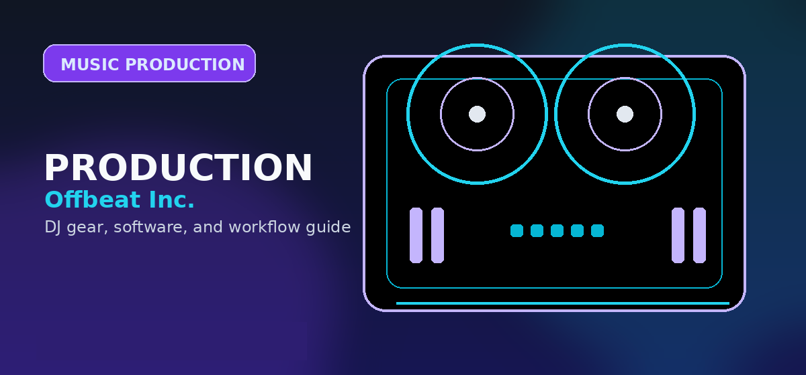

Music Production for DJs
A secondary producer-crossover hub for DJ readers who want DAWs, plugins, sample packs, and distribution without diluting the main DJ gear authority path.

Producer crossover, not primary navigation
This page preserves related topic links while keeping producer content outside the main DJ controller/software funnel. Use it for readers who are already moving from DJing into edits, remixes, mashups, sample packs, plugins, and release workflows.
Best DAW for Music Production
Compare DAWs for DJ/producers.
Open →SoftwareMusic Production Software
Broader production software guide.
Open →PluginsBest Production Plugins
Effects and instruments for producer crossover.
Open →SamplesBest DJ Sample Packs
Loops and samples for transitions, edits, and remixes.
Open →HardwareMIDI Controllers
Production-oriented controllers.
Open →ReleaseMusic Distribution
Route releases to distribution comparison pages.
Open →How DJing and production connect
DJing teaches arrangement, energy control, phrasing, genre context, and audience response. Production turns those instincts into original tracks, edits, intros, transitions, and remixes. The crossover works best when each tool has a purpose: DJ software for performance, a DAW for creation, sample tools for source material, and distribution platforms for release.
Start with one concrete goal. If the goal is to make cleaner DJ edits, learn arrangement, warping, and export settings. If the goal is original tracks, learn drums, bass, chord movement, and mix balance. If the goal is releasing music, learn metadata, artwork, distribution, and basic promotion before the release date.
Recommended production path for DJs
- Make edits first. Intro edits, clean outros, and transition tools are practical and immediately useful in DJ sets.
- Build original loops. Practice drums, bass, and hooks without trying to finish a full song immediately.
- Finish short arrangements. A complete two-minute idea teaches more than an unfinished eight-minute loop.
- Release only cleared material. Distribution is for music you have rights to release, not for bootlegs or uncleared edits.
Practical checklist before moving on
- Define the immediate goal. Decide whether the next action is learning, buying, organizing, producing, releasing, or performing.
- Use the linked specialist guides. This page is a routing layer; the comparison and review pages contain the deeper buying or workflow decisions.
- Avoid unnecessary upgrades. Move to paid tools, new hardware, or new services only when they remove a specific bottleneck.
- Keep files organized. Clear folders, backups, metadata, and version names matter for DJing, production, and release workflows.
The best next page is the one that matches the task in front of you. Choose a controller only after considering software, choose software only after considering workflow, and choose release or promotion tools only after the music itself is ready.
What to avoid when crossing from DJing into production
Do not begin by collecting plugins, copying another producer’s entire studio, or trying to master every DAW. Start with small finished outputs: a clean intro edit, a loop-based sketch, a short arrangement, and one exported track that can be tested in a DJ set. Finished repetitions create better judgment than endless setup changes.
Practical checklist before you decide
Use this page as one part of the decision, not the whole decision. Confirm the current price, software compatibility, operating-system support, and whether the option still fits the way you actually practice or perform.
- Fit: choose the option that matches your current workflow and the setup you expect to use for the next year.
- Compatibility: verify exact hardware, app, subscription, and file-format requirements before buying or switching.
- Reliability: avoid workflows that depend on one fragile adapter, one unstable app version, or an internet connection with no backup.
- Upgrade path: favor tools that can grow with you instead of forcing another purchase as soon as you start recording mixes or playing longer sets.
How to use this guide in a real DJ setup
Before changing gear, software, or workflow, connect the recommendation to an actual use case: home practice, recorded mixes, streaming, mobile events, club preparation, or production crossover. A choice that looks best on paper can still be wrong if it adds setup friction or does not match the way you will play.
The safest workflow is to test the setup exactly as you will use it, then document the cable path, software version, library source, and backup plan. That prevents most of the avoidable failures that happen when DJs buy the right-looking tool but never validate the whole system.
Official product and support pages
Use these official pages to confirm current specifications, software compatibility, and support details before buying.
How this guide fits
Use this guide for creation workflow, DAWs, plugins, samples, and home-studio decisions. Use Music Distribution when you are ready to release finished tracks.
Frequently Asked Questions
Should DJs learn music production?
DJs do not need to produce music, but production can help with edits, remixes, intro versions, original tracks, and a more distinctive booking identity.
Which DAW should DJs start with?
Ableton Live is the most natural choice for loop-based electronic workflows, FL Studio is strong for beatmaking, Logic Pro is efficient for Mac users, and GarageBand is enough for basic first ideas.
What should I make first?
Start with DJ edits, intro/outro versions, drum loops, and simple remixes before attempting a full original track. These projects connect directly to DJ practice.
When should I release music?
Release only after the track translates on headphones, monitors, car speakers, and a club-style system. Distribution is not a substitute for finishing and testing the record.
The DJ-first production workflow
The fastest bridge from DJing to production is not a blank-canvas album project. Start with edits: add an intro, clean up an outro, make a radio-length arrangement longer for mixing, or build a simple drum tool. Those small projects teach arrangement, gain staging, and export settings while producing files you can actually use in a DJ set.